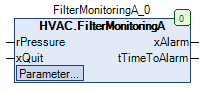

FilterMonitoringA (FB)¶
FUNCTION_BLOCK FilterMonitoringA
Short Description¶
Detection of a filter contamination and generation of a fault messageTypical application: Monitoring the contamination of an air filter with a differential pressure sensor
Portrayal¶

Functional Description¶
General¶
This function block is used to detect filter contamination by evaluating the input for the rPressure differential pressure sensor.
If the differential pressure rPressure during the message delay udiControlTime permanently exceeds the limit value rControlPressure (prerequisite: enabling of monitoring xControl is active ( = TRUE )), the alarm output xAlarm becomes active ( = TRUE ).
Enabling the monitoring xControl¶
Monitoring can generally be enabled ( = TRUE ) or disabled ( = FALSE ).
If monitoring is not enabled, the output fault message xAlarm is deactivated ( = FALSE ) and the time until the fault message tTimeToAlarm is triggered takes the value 0s.
Output - fault message xAlarm¶
The output - fault message xAlarm is activated (xAlarm = TRUE) if condition 1 below is met.
Condition 1:
The input for the differential pressure sensor rPressure is permanently greater than the maximum permissible differential pressure rControlPressure ( = filter contamination ) at least during the message delay udiControlTime.
At the same time the monitoring is released generally (xContol = TRUE).
The output - fault message xAlarm is deactivated (xAlarm = FALSE) in following cases:
Case 1: Condition 1 is not fulfilled and the reset of the error message xQuit is active ( = TRUE ).
Case 2: The Condition 1 is not fulfilled and the release of the monitoring xControl is not active (= FALSE).
Time duration until the fault message is triggered * tTimeToAlarm*¶
Different values are displayed at the output tTimeToAlarm depending on the operating situation:
Situation 1: Output of the remaining time until the error message is triggered ( conditions: rPressure > rControlPressure, xControl = TRUE )
Situation 2: If the situation 1 is not present, then the value 0.0 is permanently displayed.
Visualization¶
Codesys¶
- InOut:
Scope Name Type Initial Comment Input rPressure REAL Input - differential pressure sensor in Pa
xQuit BOOL FALSE Input - Reset - Fault signal (triggering via rising edge)
udiControlTime UDINT 300 Message delay in seconds (1 - 3600s)
rControlPressure REAL 200 Maximum differential pressure across the filter in Pa
xControl BOOL TRUE Enable monitoring (FALSE = Off, TRUE = On)
Output xAlarm BOOL Output - Fault message (FALSE = Off, TRUE = On)
tTimeToAlarm TIME Duration until the fault message is triggered in seconds